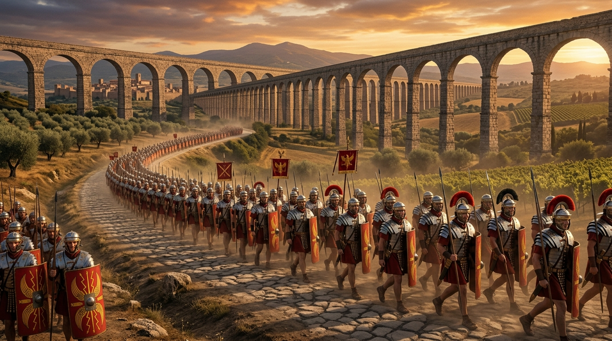

A Águia de Ferro, a Plenitude dos Tempos e a Cruz
Se o Antigo Testamento encerrou suas páginas sob a tolerância branda do Império Persa e a transição cultural do Império Grego, o Novo Testamento abre suas cortinas sob o jugo de ferro, a disciplina implacável e a formidável infraestrutura do Império Romano. Nascida como uma república e transformada na superpotência máxima da antiguidade após derrotar Cartago e os reinos helenísticos, Roma estendeu as asas de suas águias legionárias da Grã-Bretanha aos confins do Deserto da Arábia. A Bíblia ensina que Cristo nasceu "na plenitude dos tempos" (Gálatas 4:4), e foi precisamente o cenário construído por Roma que tornou o primeiro século o momento histórico perfeito para a encarnação do Messias e a propagação global do Evangelho.
1. A Pax Romana e as Estradas do Evangelho
Após décadas de guerras civis sangrentas, o imperador Otávio (César Augusto) consolidou o poder e inaugurou a Pax Romana (a Paz de Roma) — um período de cerca de dois séculos de estabilidade interna incomparável no mundo mediterrâneo. Embora tenha sido uma "paz" mantida à força da espada e pela intimidação militar, ela criou as condições ideais para a disseminação de ideias.
Roma unificou politicamente o mundo e conectou-o fisicamente através de sua formidável malha de estradas pavimentadas em pedra, projetadas inicialmente para o deslocamento rápido de suas legiões. Ironicamente, essas mesmas estradas construídas para os soldados de César tornaram-se as vias pelas quais missionários, como o apóstolo Paulo, viajaram com segurança, sem o constante temor de bandoleiros ou fronteiras hostis, levando as boas-novas de Cristo às maiores metrópoles da Ásia Menor e da Europa.
2. A Manobra de Augusto e o Berço em Belém
A narrativa do nascimento de Jesus evidencia como Deus moveu o maior monarca da terra para cumprir as minúcias de Suas profecias. Sete séculos antes, o profeta Miqueias havia decretado que o Messias não nasceria em Nazaré, mas na pequena Belém de Judá (Mq 5:2). Para que isso ocorresse, César Augusto — sentado em seu palácio no monte Palatino, em Roma — emitiu um decreto imperial ordenando o recenseamento de todo o mundo habitado para fins de taxação.
Essa pesada exigência burocrática estatal forçou o carpinteiro José, da linhagem real, a levar sua noiva Maria, já em trabalho de parto, para a cidade de seus antepassados. Augusto pensava estar contando seus súditos para aumentar suas riquezas, mas estava, na verdade, atuando como um peão no tabuleiro soberano de Deus para que o Rei dos Reis nascesse no local designado pelas Escrituras.
3. O Colapso da Justiça: Herodes, Pilatos e a Cruz
Na época do ministério de Jesus, a Judeia era uma caldeira fervente de tensões políticas, operando sob um sistema administrativo duplo e cruel. Internamente, o poder estava nas mãos de governantes fantoches, como os Herodes — uma dinastia implacável de origem edomita que tentava agradar a Roma erguendo grandiosos projetos arquitetônicos, enquanto assassinava rivais políticos, como João Batista.
Mas o poder de vida e morte (o Ius Gladii) pertencia ao governador romano, um procurador (ou prefeito) designado diretamente por Roma. Pôncio Pilatos assumiu esse papel durante os anos de Cristo. A crucificação — uma tortura brutal que os romanos aprenderam com os persas e aprimoraram para ser a morte mais agonizante e humilhante possível — era reservada exclusivamente a rebeldes não-cidadãos, escravos e inimigos do Estado. Quando a liderança religiosa corrupta de Israel manipulou Pilatos a condenar Jesus sob a falsa acusação de traição contra César, a justiça romana colapsou. No entanto, por trás do veredito injusto de Pilatos, a justiça redentora de Deus se cumpria: a cruz romana tornou-se o altar onde a dívida do pecado humano foi cancelada.
4. O Império e o "Senhor" que Não é César
O relacionamento da Igreja nascente com o Império Romano foi marcado pela lealdade civil paradoxal e pelo confronto teológico. O apóstolo Paulo orientou os cristãos a pagarem seus impostos e respeitarem as autoridades romanas (Rm 13), valendo-se ele mesmo de sua cidadania romana para apelar ao tribunal supremo e garantir a proteção de sua vida para pregar na capital.
Contudo, o conflito tornou-se inevitável quando Roma passou a exigir a adoração ao imperador. Para o mundo antigo, acostumado a uma multiplicidade de deuses, adicionar o "Gênio de César" ao panteão era um mero ato cívico. Para os cristãos, era idolatria. A declaração "Jesus é o Senhor" (Kurios Iesous) não era apenas uma afirmação religiosa; era uma traição política frontal ao título exigido pelos Césares. Isso desencadeou perseguições brutais sob imperadores como Nero, Domiciano e Diocleciano. No entanto, o sangue dos mártires nas arenas transformou-se na semente da Igreja, provando que enquanto a invencível Roma um dia ruiria, o Reino que não é deste mundo reinaria para sempre.
Continue sua jornada:
- Voltar ⬅️ Ver todos os impérios
- Temas 📚 Ver todos os estudos
Apoie este projeto 🌱
Se este estudo foi útil, considere apoiar a manutenção do site.
Chave PIX (Celular):
marcosmontanaria@gmail.com